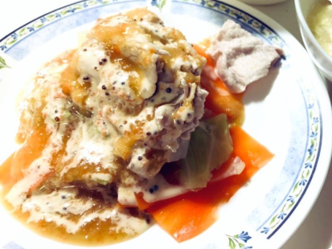

その他の本格レシピ

どうもー！自炊大学生のほうれん草(仮名)です。
今回はミキサーで混ぜるだけの本格レシピ
冷しゃぶドレッシング
のレシピを紹介していきますノ
おもてなしにもピッタリ!
冷しゃぶのイメージが180°変わります！
野菜ドレッシング用
フレンチドレッシング
1.玉ねぎ、人参をミキサーにかけれるように1口大に切る
人参の皮と玉ねぎの皮は向いてください
2.野菜ドレッシングの材料を全てミキサーにいれて混ぜる
正直、フレンチドレッシングなくても充分美味しいです。
余力のある人はフレンチドレッシングも作ってかけてね！
3.お好みの野菜や肉を茹でて、野菜ドレッシングをかけて完成
4.フレンチドレッシングの材料を全て器にいれて混ぜる
野菜ドレッシングに比べると量は少なめなので
小さな器で混ぜると洗い物削減になります
5.野菜ドレッシングの上にフレンチドレッシングを欠けて完成
